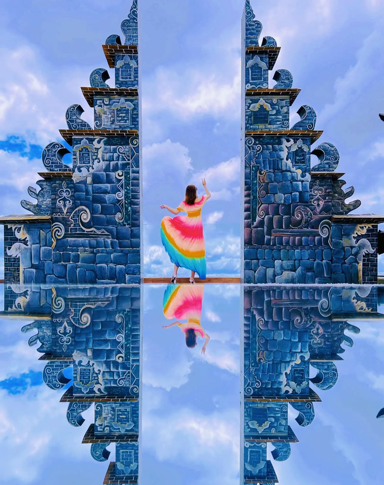
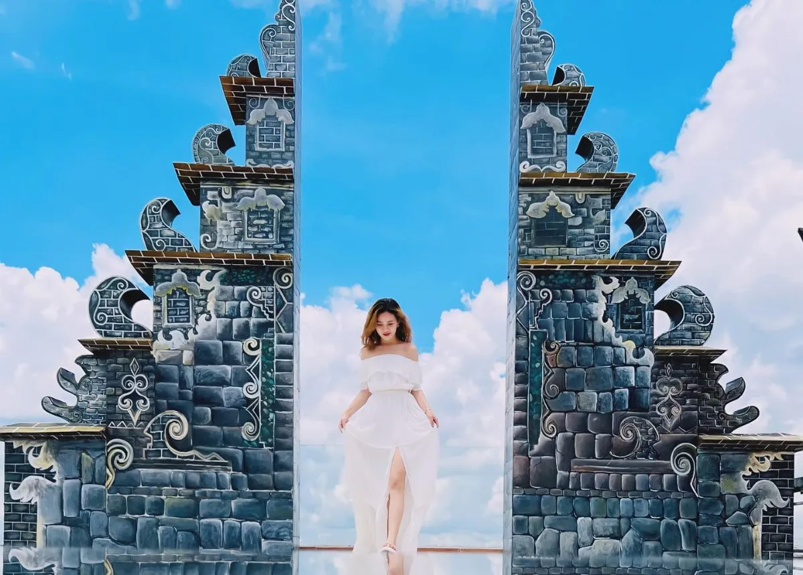
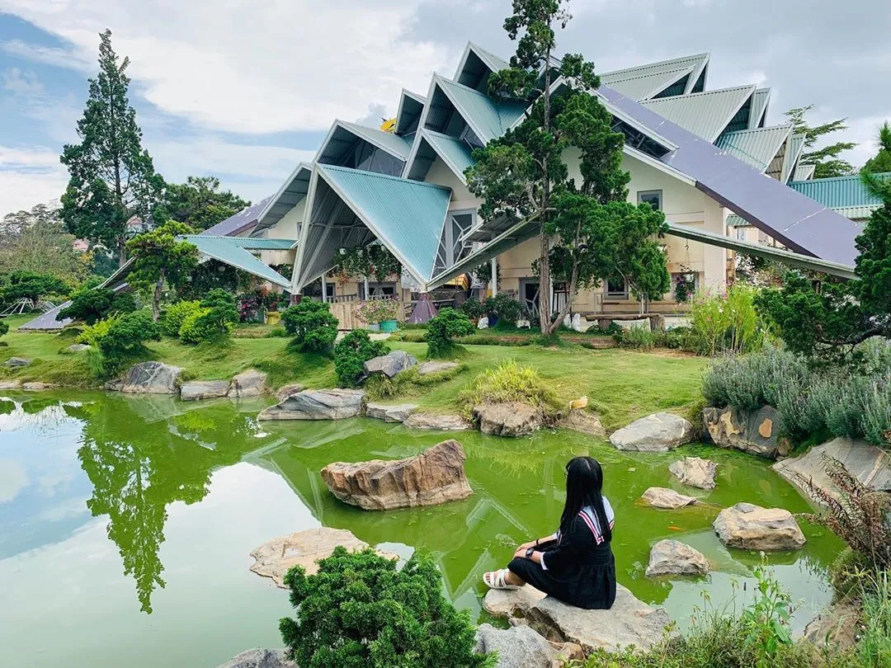
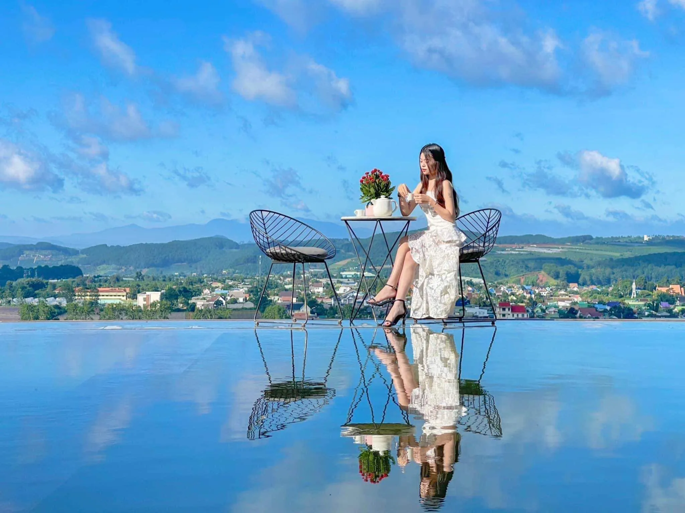
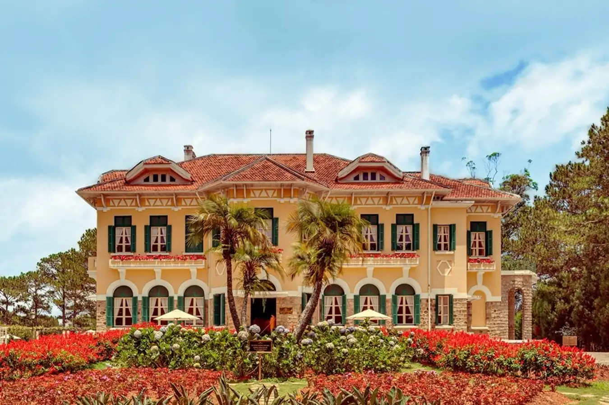
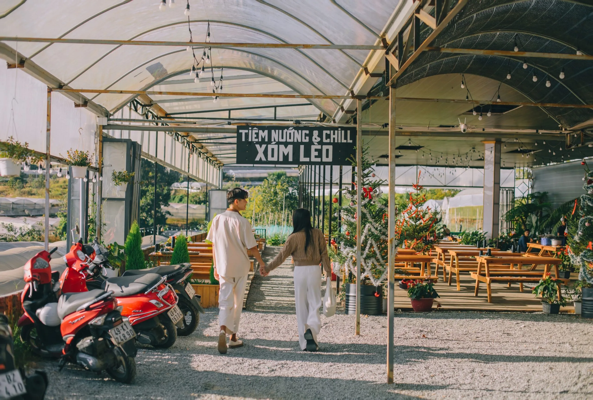

Cổng Trời Bali Đà Lạt – Góc sống ảo đẹp tựa Bali hot 2025

Mục lục bài viết
- 1. Cổng trời Bali Đà Lạt cách trung tâm bao xa?
- 2. Hướng dẫn di chuyển đến Cổng trời Bali Đà Lạt – Green Hills Đà Lạt
- 3. Thời gian mở cửa và giá vé Cổng trời Bali Đà Lạt
- 4. Review Cổng trời Bali Đà Lạt có gì đặc biệt?
- 5. Tips sống ảo “ngàn tim” tại Cổng trời Bali Đà Lạt
- 6. Lưu ý khi tham quan Cổng trời Bali Đà Lạt để có trải nghiệm trọn vẹn
- 7. Các địa điểm du lịch gần Cổng trời Bali Đà Lạt nên ghé thăm
- 8. Gợi ý trải nghiệm ẩm thực gần Cổng trời Bali Đà Lạt
Đà Lạt – thành phố ngàn hoa không chỉ gây thương nhớ bởi khung cảnh thiên nhiên lãng mạn, khí hậu mát mẻ quanh năm mà còn sở hữu vô vàn tọa độ “sống ảo” thu hút hàng triệu du khách ghé thăm mỗi năm. Trong số đó, một điểm đến đang “làm mưa làm gió” trên bản đồ du lịch chính là Cổng Trời Bali Green Hills – nơi được ví như “tiểu Bali” giữa lòng cao nguyên Lâm Viên.

Nếu bạn đang lên kế hoạch khám phá Đà Lạt để thư giãn, chụp ảnh hay đơn giản là tìm kiếm một không gian khác biệt thì chắc chắn không nên bỏ lỡ địa điểm độc đáo này. Trong vài năm trở lại đây, Cổng Trời Bali đã trở thành điểm “check-in quốc dân”, được chia sẻ rầm rộ trên mạng xã hội nhờ vẻ đẹp tựa chốn thiên đường. Hãy cùng khám phá những điều thú vị đang chờ đón bạn tại điểm đến siêu hot này trong bài viết dưới đây!
1. Cổng trời Bali Đà Lạt cách trung tâm bao xa?
Cổng trời Bali Đà Lạt nằm ở đâu? Địa chỉ của địa điểm “sống ảo” nổi tiếng này là tại Đà Lạt Telpher – Starting Point, phường 3, thành phố Đà Lạt, tỉnh Lâm Đồng.
Khi nhắc đến cái tên “Cổng trời Bali”, nhiều người sẽ lập tức liên tưởng đến công trình kiến trúc huyền thoại tại đền Pura Lempuyang Luhur – một biểu tượng du lịch của “xứ sở vạn đảo” Indonesia. Tuy nhiên, giờ đây bạn không cần bay xa hàng nghìn cây số để chiêm ngưỡng vẻ đẹp đó, bởi Đà Lạt cũng đã có phiên bản “Cổng trời Bali” riêng, được tái hiện đầy tinh tế giữa thiên nhiên thơ mộng của phố núi.
Dù nằm ở hai quốc gia khác nhau, nhưng hai công trình lại mang nhiều nét tương đồng về kiến trúc, không gian và cảm xúc mà chúng mang lại. Nhờ đó, Cổng trời Bali tại Đà Lạt nhanh chóng trở thành điểm đến được giới trẻ và du khách mê “check-in” săn đón nồng nhiệt.

Tọa lạc trong khuôn viên khu du lịch Đồi Robin – hay còn gọi là đồi cáp treo Đà Lạt, địa điểm này chỉ cách trung tâm thành phố khoảng 2,7 km, rất thuận tiện để di chuyển. Giữa khung cảnh rừng thông bạt ngàn và núi non trùng điệp, Cổng trời Bali hiện ra như một điểm nhấn đầy mê hoặc. Mặc dù có quy mô nhỏ hơn bản gốc tại Indonesia, nhưng vẻ đẹp độc đáo và khả năng “lên hình cực đỉnh” khiến nơi đây chưa bao giờ giảm nhiệt trên bản đồ du lịch Đà Lạt.

2. Hướng dẫn di chuyển đến Cổng trời Bali Đà Lạt – Green Hills Đà Lạt
Hành trình đến Cổng trời Bali tại Green Hills Đà Lạt khá dễ dàng và thuận tiện. Để linh hoạt hơn trong việc khám phá các điểm du lịch, nhiều du khách thường lựa chọn thuê xe máy với mức giá dao động từ 80.000 – 120.000 VNĐ/ngày.
Xuất phát từ chợ Đà Lạt, bạn đi theo đường Hồ Tùng Mậu đến vòng xoay đèo Prenn, sau đó rẽ vào đường 3/4. Tiếp tục chạy thẳng đến khi thấy Bến xe liên tỉnh, rồi quan sát các biển chỉ dẫn đến khu cáp treo – cứ men theo con đường đó, bạn sẽ nhanh chóng bắt gặp hình ảnh Cổng trời Bali hiện ra nổi bật giữa thiên nhiên núi rừng.
Mặc dù đường đi không quá phức tạp, nhưng có một vài đoạn cua và dốc đặc trưng của Đà Lạt, đòi hỏi người lái xe cần có một chút kỹ năng và sự cẩn trọng. Nếu bạn chưa quen với địa hình hoặc muốn có chuyến đi thoải mái hơn, thuê taxi là một lựa chọn an toàn và hợp lý để tận hưởng trọn vẹn hành trình khám phá điểm đến “sống ảo” nổi tiếng này.
3. Thời gian mở cửa và giá vé Cổng trời Bali Đà Lạt
Cổng trời Bali Đà Lạt mở cửa đón khách từ 6h30 sáng đến 22h tối mỗi ngày, thuận tiện cho du khách sắp xếp thời gian tham quan và chụp ảnh ở mọi khung giờ, đặc biệt là sáng sớm và chiều hoàng hôn – thời điểm ánh sáng đẹp nhất để “sống ảo”.
Giá vé tham quan tại đây được áp dụng như sau:
-
Người lớn: 100.000 VNĐ/người (đã bao gồm phí vào cổng và 1 phần nước tự chọn tại khu du lịch).
-
Trẻ em dưới 1m: Miễn phí vé hoàn toàn.
Ngoài ra, nếu du khách có nhu cầu thuê trang phục chụp ảnh (như váy vintage, váy công chúa…) hay thuê dịch vụ chụp ảnh chuyên nghiệp, sẽ cần thanh toán thêm chi phí phụ thu tùy theo từng dịch vụ.
Với mức giá hợp lý và nhiều trải nghiệm hấp dẫn, Cổng trời Bali Đà Lạt là điểm đến không thể bỏ lỡ cho những ai muốn lưu giữ những bức ảnh ấn tượng giữa khung cảnh thiên nhiên tuyệt đẹp.
4. Review Cổng trời Bali Đà Lạt có gì đặc biệt?
Dù chỉ mới xuất hiện trong vài năm trở lại đây, Cổng trời Bali Đà Lạt đã nhanh chóng trở thành một trong những tọa độ check-in “gây sốt” nhất tại thành phố ngàn hoa. Vậy điều gì khiến nơi đây thu hút đến vậy? Hãy cùng khám phá nhé!
4.1. “Phiên bản Việt” đẹp như mơ của Cổng trời Bali Indonesia
Lấy cảm hứng từ kiến trúc ngôi đền Pura Lempuyang Luhur nổi tiếng ở Indonesia, Cổng trời Bali tại Đà Lạt được xây dựng với thiết kế uy nghi nhưng lại mang dấu ấn riêng rất đặc trưng của vùng cao nguyên Lâm Đồng. Giữa không gian khoáng đạt, nơi núi rừng thông xanh bạt ngàn ôm trọn lấy, cổng trời như mở ra một lối đi dẫn đến tiên cảnh, tạo nên một khung hình vừa kỳ ảo vừa trữ tình.
Tọa lạc trên đồi Robin – khu vực vốn được biết đến bởi cảnh quan lãng mạn và khí hậu mát mẻ quanh năm, nơi đây trở thành điểm đến lý tưởng để du khách “trốn phố”, tìm về cảm giác bình yên, thư thái giữa thiên nhiên.

4.2. View “triệu đô” tại Cổng trời Bali Đà Lạt ôm trọn núi đồi Đà Lạt
Không quá lời khi nói rằng Cổng trời Bali sở hữu tầm nhìn đắt giá bậc nhất Đà Lạt. Đứng tại đây, bạn sẽ được chiêm ngưỡng toàn cảnh thiên nhiên hùng vĩ – từ những dãy đồi trập trùng, rừng thông xanh mướt cho đến bầu trời cao vời vợi.
Đặc biệt, nếu ghé thăm vào buổi sớm, bạn sẽ được “đón ngày mới” với sương mù bảng lảng và không khí se lạnh đặc trưng của Đà Lạt. Còn khi chiều buông, ánh hoàng hôn nhuộm vàng mọi thứ, khiến không gian nơi đây trở nên mơ màng và lãng mạn vô cùng.

4.3. Hàng loạt tiểu cảnh đẹp như mơ, “giơ máy là có ảnh”
Chỉ cần dạo một vòng mạng xã hội, bạn sẽ thấy hàng ngàn bức ảnh “triệu like” được check-in tại Cổng trời Bali Đà Lạt. Không chỉ có thiết kế đặc sắc, nơi đây còn sở hữu hồ nước phẳng lặng ngay bên dưới, tạo hiệu ứng gương soi độc đáo, khiến mọi bức hình trở nên lung linh, huyền ảo như thật như mơ.
Ngoài “cổng trời” chính, khuôn viên còn được bố trí rất nhiều tiểu cảnh sống ảo được đầu tư bài bản như: tổ chim khổng lồ, xích đu trời, quán cafe view thung lũng… Mỗi góc đều là một concept riêng biệt, mang đến cho du khách hàng trăm lựa chọn background tuyệt đẹp.
Nhiều du khách còn chia sẻ rằng: “Chỉ cần đứng vào là có ảnh đẹp”, không cần chỉnh sửa cầu kỳ, không cần tạo dáng phức tạp.

5. Tips sống ảo “ngàn tim” tại Cổng trời Bali Đà Lạt
Nếu bạn đang tìm kiếm những bí quyết để có được những bức hình đẹp “nghìn like” tại Cổng trời Bali Đà Lạt, đừng bỏ qua những tips sống ảo dưới đây. Chỉ cần vài mẹo nhỏ, bạn sẽ có ngay loạt ảnh triệu tim để “khoe” trên mạng xã hội!
5.1 Thời điểm lý tưởng để chụp ảnh tại Cổng trời Bali Đà Lạt
Thời điểm đẹp nhất để chụp ảnh tại Cổng trời Bali Đà Lạt là vào sáng sớm, khoảng từ 6h30 đến 8h00. Đây là lúc ánh nắng dịu nhẹ, không khí trong lành, sương sớm còn lảng vảng, tạo nên khung cảnh huyền ảo và thơ mộng. Ánh sáng tự nhiên buổi sáng sẽ giúp ảnh của bạn trở nên lung linh, không cần chỉnh sửa quá nhiều.
📸 Tip nhỏ: Ưu tiên đi vào ngày nắng nhẹ hoặc có mây để bầu trời và khung cảnh thêm phần sống động.
5.2 Lưu ý trang phục khi check-in Cổng trời Bali Đà Lạt
Để bức ảnh nổi bật và hòa hợp với khung cảnh thiên nhiên, bạn nên lựa chọn trang phục phù hợp:
Nữ giới: Ưu tiên váy maxi dài, chất liệu mềm mại, gam màu pastel hoặc trắng – giúp nổi bật trên nền trời và núi non.

Nam giới: Chọn đồ đơn giản, năng động như sơ mi trắng, quần kaki, hoặc outfit mang phong cách boho nhẹ nhàng.
Đừng quên các phụ kiện như: kính râm, mũ rộng vành, quạt tay, khăn choàng… để tăng điểm nhấn cho bức ảnh. Ngoài ra, tại khu vực Cổng trời Bali Đà Lạt còn có dịch vụ cho thuê trang phục chụp hình, rất tiện lợi nếu bạn muốn đổi phong cách nhanh chóng.
5.3 Cách tạo dáng chụp ảnh đẹp tại Cổng trời Bali Đà Lạt
Khi đến Cổng trời Bali Đà Lạt, bạn có thể tham khảo một số dáng chụp ảnh đẹp sau để tạo nên những bức hình ấn tượng:
-
Tạo dáng hình chữ V với hai tay giơ lên đầu, cười thật tươi, chụp từ dưới lên để lấy trọn khung trời xanh và cánh cổng phía sau.
-
Quay lưng lại với cổng, mắt hướng về phía xa, tạo dáng “deep”, nhẹ nhàng và đầy cảm xúc.
-
Tư thế đi trên không: nhón một chân lên, tay dang nhẹ, tạo cảm giác như đang bay giữa không trung – rất phù hợp với không gian mộng mơ tại đây.
💡 Mẹo nhỏ: Hãy sáng tạo dáng chụp riêng thể hiện cá tính của bạn. Luôn nở nụ cười tự nhiên để bức ảnh thêm sức sống và chân thật.

6. Lưu ý khi tham quan Cổng trời Bali Đà Lạt để có trải nghiệm trọn vẹn
Để có chuyến đi suôn sẻ và những bức ảnh sống ảo hoàn hảo tại Cổng trời Bali Đà Lạt, bạn nên ghi nhớ một số lưu ý sau:
-
Chọn thời điểm phù hợp: Sáng sớm là khoảng thời gian lý tưởng nhất để ghé thăm. Không khí mát lạnh, yên tĩnh cùng ánh sáng nhẹ nhàng sẽ giúp bạn dễ dàng chụp được những bức ảnh ấn tượng.
-
Trang phục đúng “chất Bali”:
-
Nữ nên chọn váy maxi, váy ren hoặc phong cách boho để hài hòa với thiên nhiên và khung cảnh cổng trời.
-
Nam giới có thể mặc trang phục đơn giản, màu trung tính hoặc trắng để dễ phối đồ và nổi bật trên ảnh.
-
-
Tôn trọng không gian chung: Khi chụp ảnh, nên tiết kiệm thời gian tạo dáng để không làm ảnh hưởng đến trải nghiệm của các du khách khác cũng đang chờ đến lượt.
-
Lưu ý khi di chuyển bằng xe máy: Đường lên khu nghỉ dưỡng có một số đoạn đèo, dốc cao và quanh co. Hãy kiểm tra xe kỹ lưỡng, mang theo áo khoác và chạy xe cẩn thận để đảm bảo an toàn.
-
Chỉnh ảnh sau chụp để tăng phần “ảo diệu”: Một số ứng dụng chỉnh ảnh phổ biến như VSCO, Lightroom, Foodie sẽ giúp bức ảnh của bạn lung linh và sắc nét hơn, đặc biệt là khi đăng tải lên mạng xã hội.
7. Các địa điểm du lịch gần Cổng trời Bali Đà Lạt nên ghé thăm
Sau khi đã check-in “cháy máy” tại Cổng trời Bali Đà Lạt, bạn đừng vội rời đi. Khu vực lân cận có nhiều điểm đến hấp dẫn khác rất đáng để khám phá:
✅ Khu du lịch Lá Phong
Một điểm đến độc đáo với vườn bonsai, hàng trăm loài hoa đặc sắc và kiến trúc ấn tượng. Đây là nơi lý tưởng để tận hưởng vẻ đẹp thiên nhiên và lưu lại những khoảnh khắc yên bình.

✅ Hồ Trên Mây Đà Lạt
Nằm trên đỉnh đồi cao, nơi đây không chỉ có không gian lãng mạn mà còn cho phép bạn ngắm nhìn toàn cảnh thiên nhiên thơ mộng của Đà Lạt. Vừa nhâm nhi cà phê, vừa chill cùng mây trời – một trải nghiệm không thể bỏ lỡ.

✅ Quảng trường Lâm Viên
Biểu tượng nổi bật của Đà Lạt với công trình kiến trúc hình bông atiso và hoa dã quỳ khổng lồ. Đây là nơi lý tưởng để chụp ảnh và tham gia các hoạt động văn hóa, sự kiện.

✅ Dinh Bảo Đại II – Cổng trời Bali Đà Lạt
Một công trình mang giá trị lịch sử đặc biệt, từng là nơi làm việc của vua Bảo Đại. Dinh thự mang đậm kiến trúc Pháp cổ, nằm giữa rừng thông xanh mát – là điểm đến yêu thích của những ai yêu thích lịch sử và kiến trúc.

✅ Thiền viện Trúc Lâm
Tọa lạc bên hồ Tuyền Lâm, giữa rừng thông mênh mông. Đây là nơi lý tưởng để tịnh tâm, hít thở không khí trong lành và chiêm ngưỡng vẻ đẹp kiến trúc Phật giáo truyền thống.

8. Gợi ý trải nghiệm ẩm thực gần Cổng trời Bali Đà Lạt

Sau khi khám phá Cổng Trời Đà Lạt, hãy ghé qua Tiệm Nướng & Chill Xóm Lèo để thưởng thức những món ăn hấp dẫn. Quán nổi tiếng với không gian ấm cúng, thực đơn phong phú và đội ngũ phục vụ nhiệt tình, hứa hẹn sẽ mang đến cho bạn trải nghiệm khó quên.

📌 Địa chỉ: 113 Huỳnh Tấn Phát, Phường 11, Đà Lạt, Lâm Đồng 67000
📌 Inbox: Tại Đây
📌 Google Maps: Xem Đường Đi
📌 Hotline: 076.45.27.336 – 08.99.42.84.34 – 0902.91.22.40
Cổng Trời Đà Lạt không chỉ là một điểm check-in đẹp mà còn là nơi để bạn cảm nhận vẻ đẹp thiên nhiên và tìm lại sự bình yên trong tâm hồn. Ngoài những khoảnh khắc thư giãn và chiêm ngưỡng cảnh sắc thơ mộng, hãy kết hợp chuyến đi với các điểm đến lân cận để trải nghiệm trọn vẹn hơn. Đừng quên ghé qua Tiệm Nướng & Chill Xóm Lèo để hoàn thiện chuyến đi của bạn với một bữa ăn ngon miệng. Đà Lạt đang chờ đón bạn với những trải nghiệm tuyệt vời nhất!